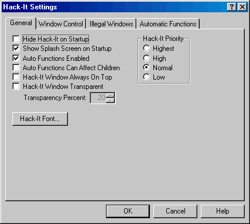

Hack-It v4.0 Help |
| General Settings Tab |
|
The general tab contains settings for configuring
the general operation of Hack-It. Most of these settings change how Hack-It
operates as an application, and how some of the inner workings of Hack-It
behave.  Hide Hack-It on
Startup: This causes Hack-It to hide itself when first starting
up. The default is Off/Unchecked. Show Splash
Screen at Startup: This causes Hack-It to show its splash screen
at startup. The default is On/Checked. Auto Functions
Enabled: Checking this box enables Automatic Functions system
wide. Unchecking it cause Automatic Functions to not be used. The default
is On/Checked. Auto
Functions Can Affect Children: Normally, autofunctions will only
affect top-level windows. By checking this box, autofunctions will be
checked for matches against child windows as well, if they are not already
limited to top-level windows as part of their specification. In order to
have autofunctions affect child windows, you must check this box AND
deselect the ‘Match Top-Level Windows Only’ box in the autofunction
itself. The default is Off/Unchecked. Hack-It Window
Always On Top: Checking this box causes the Hack-It window to have
Topmost status, staying on top of other windows. Unchecking it removes
this status. The default is Off/Unchecked. Hack-It Window
Transparent: Checking this box and setting a transparency level
causes the Hack-It window to be drawn semi-transparent. The default is
Off/Unchecked. This feature is only available under Windows 2000 and
Windows XP. Transparency Percent:
This box allows you to set the transparency of Hack-It’s main window.
The default is 20%. This feature is only available under Windows 2000 and
Windows XP. Hack-It Priority:
To allow Hack-It to respond more quickly to system events (window
creation, etc) you can set its priority to a higher level. To force
Hack-It to use less processor time, you can set its priority to a lower
level. The default is ‘Normal’. Hack-It Font: Pressing this button allows you to select the font used to display window titles in the Window List. The default is your system’s window font. |
|
Copyright 2002, Headius Incorporated |